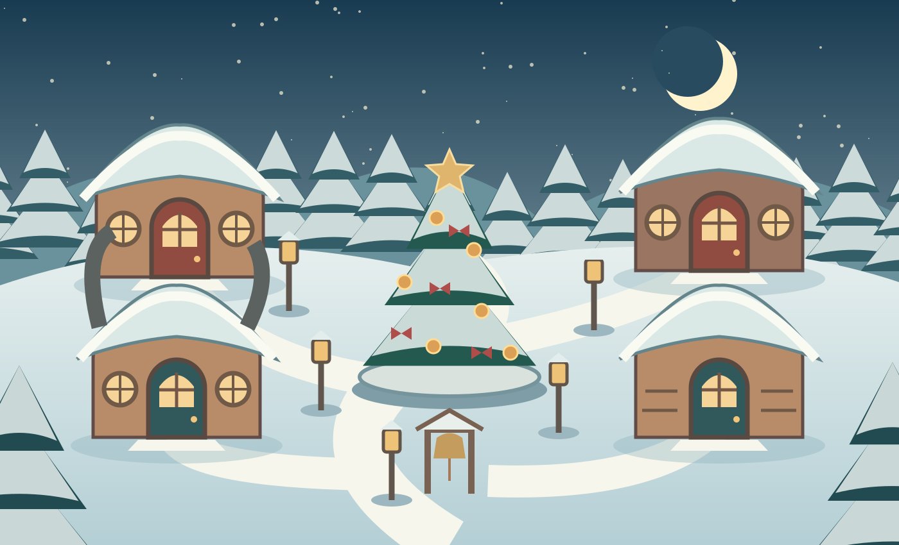

A LITTLE WINTER WONDER
Barnaby’s Christmas
Colouring Village
A warm window. A little doorway. A picture waiting for you.

Come in from the snow.
Four cosy places · nine pictures to colourCOME ON IN
Choose a picture on the table
A LITTLE COLOUR, A LITTLE WONDER
Welcome to the Whispering Woods.
Prototype artwork · original Series 4 story pictures · Luna recordings pending